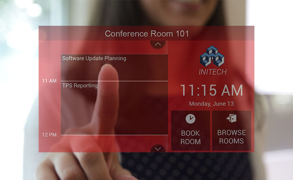

Common Uses for Office Tracker
Click on a link below to learn more about Office Tracker for various types of scheduling.
-
Appointment Scheduling - Scheduling appointments is a simple one or two click process with Office Tracker. Your users can instantly see availability for various people, rooms and other facilities, then "link" any contact(customer, vendor, employee, volunteer, patient, etc.( to the appointment without even typing.
-
Meeting Scheduling - Scheduling meetings and rooms at your company can be so much easier and less time consuming wiht Office Tracker. Not to mention you can avoid the double booking frustration that is all too common when using less efficient scheduling systms such as spreadsheets or paper.
-

Facility and Room - Scheduling facilities, resources and rooms can be so much easier and less time consuming with Office Tracker. You can track usage of equipment and facilities, assign specific people to perform scheduling on a resource by resource basis, and see at a glance what is going on for any number of resources..
-
Educational - Classroom, Instructor and Library Scheduling - Office Tracker has been the choice for educational insitutions for many years. Universitites and schools around the world use it to schedule rooms, teachers, counseling sessions and facilities. The optional WebViewer lets you share the schedules with students, parents, and other on a need to know basis right in their web browser.
-
Community Center Scheduling - Office Tracker makes it so easy to schedule events, activities and facilities, even volunteer staff will have no trouble scheduling with very little experience. In addition you can schedule volunteers, staff, vacation time and other regular meetings and appointments. Print great calendars, reports and collect detailed information for quarterly or year-end reporting.
Office Tracker lets you set up meetings with just a couple of clicks, and provides instant notification to all parties involed in the meeting. Additional equipment, food servies, and other resources can be easily scheduled at the same time as the reservation is scheduled.
-
Medical Scheduling - Office Tracker's easy to use scheduling interface, ability to schedule multiple events at the same time, and the ability to allow several schedulers to schedule for the same group of providers, makes it a natural choice for the medical office. Hospitals, Clinics, Conseling Centers, and General Practioners alike all fine Office Tracker to be a perfect match for their busy scheduling needs.